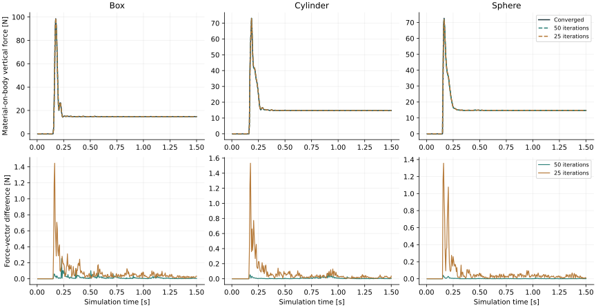

Slides · Previous GPU profile · Complete measurements
4,000 particles · RTX 5090 · one environment · 0.005 s timestep · frozen GNN checkpoint · no MPM at inference.
| Stage | Previous [ms] | Optimized, strict [ms] | Optimized, 50 iterations [ms] |
|---|---|---|---|
| GNN | 6.12 | 1.51 | 1.48 |
| Velocity-gradient fit | 4.54 | 0.41 | 0.40 |
| Contact impulse solve | 3.49 | 3.51 | 1.20 |
| Particle neighbors | 1.13 | 1.15 | 1.14 |
| Complete step (wall clock) | 15.73 | 7.14 | 4.31 |
Each final whole-step result uses three reset 300-step trajectories after one full warmup. GPU synchronization bounds each timed step. Loading, compilation, reset, rendering, logging and diagnostic readback are excluded. Stages use CUDA events in separate 300-step runs and need not sum to the wall-clock result. Earlier optimization runs measured 6.39 ms (strict) and 4.20 ms (50); the table reports final-code measurements, not the fastest trial.
The trained weights and all radius-graph edges are retained. The first linear layer of each edge update is evaluated as source-node projection + destination-node projection + edge projection. Source and destination projections are reused across neighbors. Since Warp stores edges consecutively for each destination particle, contiguous segment sums replace atomic scatter. PyTorch compilation combines compatible operations.
W × [source feature, destination feature, edge feature] + b = W_source × source feature + W_destination × destination feature + W_edge × edge feature + b
Segment sums exclude unused edge slots. Edge MLPs still run on fixed-capacity buffers; padding computation has not been fully eliminated. No CPU readback is introduced to resize tensors. The compiled path currently covers scenes with at most 10,000 particles; larger scenes retain the bounded-memory chunked path. No region selector or reduced-precision neural weights are used.
For each particle i, the current method finds its nearest point s_i on the moving rigid body. It fits G_i using neighboring particle velocities, then estimates material velocity at s_i:
material_velocity_at_surface = predicted_particle_velocity
+ G_i × (surface_point − particle_position)
The Warp fit stores the transpose of this column-vector G. Neighbor search uses a spatial hash grid with a 0.065 m fit radius; it is not an all-pairs search. The default still fits all particles, now using float32 accumulation. Contact equations remain float64.
Your proposed surface-point method reverses the construction: sample rigid-body surface points, find nearby particles, and fit material velocity there. That is a valid alternative discretization, but the current reaction model assigns an effective mass to each particle contact. A new set of surface samples needs a consistent effective mass or area weighting so adding samples does not artificially increase force.
Optional local fitting sets G to zero beyond 0.065 m from the moving body. It fitted an average of 1,539 particles for the box, 1,431 for the cylinder, and 1,242 for the sphere; force and body trajectories were identical to full fitting in all three checked 300-step rollouts. Contact selection still checks all particles. This is an explicit approximation outside the band, not a conservative proof for fast interactions.
Decision: keep full float32 fitting by default. Local fitting reduced its measured stage to 0.34 ms, but total time was 4.35 ms versus 4.31 ms without the band. This experiment establishes no end-to-end speed gain from the additional approximation.
Each variant runs the complete GNN–rigid-body simulation independently for 300 steps (1.5 s). Errors below compare material-on-body force and body motion with the optimized estimator converged to 1e-9 N·s. They are not force errors against MPM.
| Iteration limit | Box force RMSE [N] | Cylinder force RMSE [N] | Sphere force RMSE [N] | Largest body-center difference across shapes [mm] |
|---|---|---|---|---|
| 100 | 0.0002 | 0.0002 | 0.0002 | 0.0002 |
| 50 | 0.0261 | 0.0117 | 0.0048 | 0.0360 |
| 25 | 0.1555 | 0.1635 | 0.1676 | 0.6586 |
| 10 | 1.8491 | 1.5876 | 1.7664 | 11.1953 |
| 1 | 14.9196 | 11.6947 | 9.6029 | 102.2995 |

At 50 iterations, the largest force-vector difference was 0.253 N (box); the largest body-center difference was 0.036 mm. At 25 iterations, the largest force difference rose to about 1.53 N. A single iteration produced 59–79 N peak force differences and 74–102 mm body-center differences. The current coupled-contact solver cannot simply be replaced by one independent contact pass.
The strict mode uses relaxation 0.1 and typically about 140–190 iterations, with a 2,000-iteration safety limit. The 50-iteration option is a controlled approximation. Its UI and reports continue to count steps that miss the strict residual threshold.
21 focused tests pass. A five-step CUDA trace shows zero device-to-host transfers inside physics and only the existing 88-byte hash-grid descriptor upload per step. The rigid substep is graph captured; complete-step capture remains pending.
Against the previous GPU implementation, the optimized converged trajectories have force-vector RMSE of 0.0051 N (box), 0.0125 N (cylinder), and 0.00023 N (sphere). The largest body-center difference is 5.33 µm. Floating-point reordering can change individual contact activation times, so trajectory agreement is measured rather than claimed exact.
Validation covers one recorded initial condition per shape at one validation material/mass tuple. These speed changes do not fix the model's large-bed or arbitrary-dragging generalization. The earlier MPM benchmark is not an equal-accuracy comparison. GPU stage timing and whole-step latency can vary between runs.
cd ~/isaac/particle_nerd ./play.sh --run # optimized GNN, full fitting, strict solve ./play.sh --run --contact-iterations 50 # faster measured approximation # Experimental local fitting: ./play.sh --run --contact-iterations 50 --gradient-contact-band 0.065
First use compiles the GNN. Subsequent inference uses cached compiled kernels. --eager-network retains the earlier network implementation for comparisons.
# From the IsaacLab-particle-nerd worktree, with its configured Python environment: python examples/particle_nerd/profile_gpu.py DATA CHECKPOINT \ --output /tmp/profile.json --contact-iterations 50 python examples/particle_nerd/evaluate_iteration_budget.py DATA CHECKPOINT \ --output /tmp/iteration_budget.json --save-trajectories